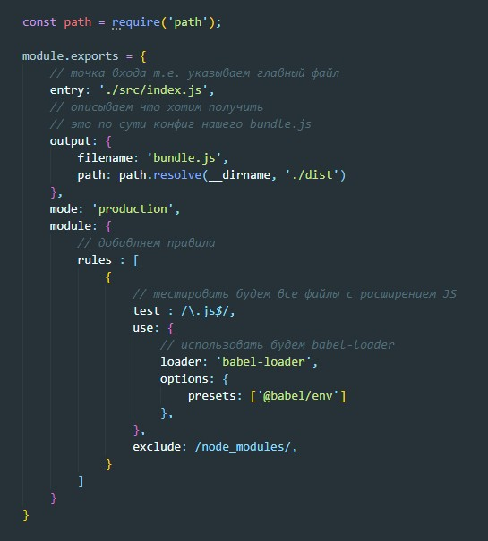

В консоли вводим команду:
npm init -yПосле инициализации в папке с проектом появится файл package.json c вот таким содержанием:
Для установки в консоли вводим команду
npm i webpack webpack-cli -DВ папке с проектом появится папка node_modules куда скачаются файлы webpack. Что бы не пушить в репозиторий эти файлы создадим файл .gitignore и в него запишем строчку исключение
Для сборки проекта в консоле вводим команду
npx webpackПосле этого в папке с проектом появится папка dist куда поместится файл main.js. Этот файл покдлючаем к index.html и все будет работать
Заходим п файл package.json и в разделе script мы можем прописывать свои скрипты. Например что бы при каждом изменение файла компиляция запускалась автоматически мы можем прописать такую команду:
Теперь что бы запустить этот скрипт в консоле вводим:
npm run watch1 В директории проекта создаем файл webpack.config.js
Далее внутри этого файла создаем экспортируемый объект который называем module
Этот объект будет хранить в себе конфигурацию нашего сборщика. Рассмотрим начальные настройки
В разделе output мы используем path.resolve() для того что бы это работало нам надо установить плагин path. __dirname - это переменная которая содежит путь до нашего каталога с проектом.
2 Добавляем в package.json в раздел script строчку "build": "webpack"
3 Добавляем правила в файле webpack.config.js
теперь в консоли прописываем комнду для установки babel
npm i -D babel-loader @babel/core @babel/preset-envПосле этого компилируем наш bundle и подключаем его к проекту
Аналог liveserver в VS CODE
Установка
npm i webpack-dev-server -Dдалее в webpack.config.js добавляем объект
полный код webpack.config.js